Top 100 Albums of 1990-1999 (Part Six: 40-21)
By No Ripcord Staff
1 July, 2013 - 07:29 — No Ripcord Staff
In this selection of twenty alone, we've got trip-hop, indie, singer-songwriters, rock, ambient, chill-out, hip-hop and more. In short - something for everyone. Why not let us know what your favourite record in this selection is using the Disqus form at the bottom of the page?
[Bubbling Under] | [Writers' Picks] | [100-81] | [80-61] | [60-41] | [40-21] | [20-16] | [15-11] | [10-6] | [5-1]
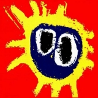40. Primal Scream
“Screamadelica”
(Creation / Sire / Warner Bros. – 1991)
After Screamadelica’s 20th anniversary series of tour parties, the new generations became much more aware of the influence that the record had for much of what was to come in the next couple of decades. The band’s flirting with the early acid house scene was, to say the least, the ground-breaking moment where genres blend into a different conception of pop music. The album won the very first Mercury Music Prize and, like many reviews and tributes of the record suggest, Screamadelica is a timeless x-ray that involuntarily encapsulates the British pop spirit of the nineties. Higher Than The Sun, Come Together, Loaded, Movin’ On Up and Slip Inside This House are indisputable pop anthems that should be part of any music collection. Carlos Dávalos
Playlist: Higher Than The Sun
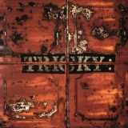39. Tricky
“Maxinquaye”
(Island – 1995)
To quote Churchill wildly out of context, Maxinquaye is a riddle wrapped in a mystery inside an enigma. Such is the depth of meaning hidden within this album’s folds that even now, eighteen years on, it retains the power to astonish, perplex, enthrall and inspire. Its breadth of scope is amazing. Songs cover sexuality, technology, identity, gender, and race. Lying at the album’s heart is the extraordinary seven and a half minutes of Aftermath, one of the most ambitious and ambiguous pieces of music of the decade. The use of samples throughout the album is audacious, but especially on this track – Marvin Gaye and Japan rub up against a quote from Blade Runner. Elsewhere, Ponderosa samples a gamelan orchestra for an otherworldly sound, Black Steel turns Public Enemy’s original on its head, and Hell Is Round The Corner shares its Isaac Hayes sample with Portishead’s Glory Box. David Wood
Playlist: Aftermath
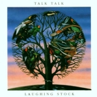38. Talk Talk
“Laughing Stock”
(Verve / Polydor – 1991)
In an unorthodox journey, Mark Hollis took Talk Talk from synth pop to this, music as far from the mainstream as you can get without being overly gratuitous. Laughing Stock followed the vibe of The Spirit Of Eden but went further from traditional song structures - there's not much in the way of verse-chorus structure here. The beauty of it comes from both the skill of the players; drummer Lee Harris in particular maintains steady order, and the production of Tim Friese-Greene. Apparently, Hollis worked hard on the "ambience" of the studio as well as the sounds, and it shows in an album that could almost make you feel as if the walls are closing in around you. Few bands since have picked up the mantle of experimentation that Hollis threw down - his own 1998 solo album being one rare example. DC Harrison
Playlist: New Grass
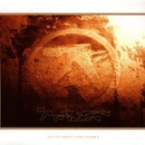37. Aphex Twin
“Selected Ambient Works Volume II”
(Warp / Sire / Warner Bros. – 1994)
Whilst its predecessor thrived on pounding 4/4 drums under its bubbling 303s and superb synth work, SAW II is more ambient in the true sense, largely eschewing rhythmical complement and staying closer to the original genre blueprint provided by Eno. Despite this, and also despite being two discs long, each track has its own individual merits that catch the attention and stick in the mind, whether it be the blissful chimes of Radiator, the sighing Rhubarb or the smothering dread of Hankie. The mood rapidly changes throughout; switching from eeriness to euphoria in the blink of an eye and the wide emotional range on show explains its widespread use in documentaries and television which continues to the present day. Richard Petty
Playlist: Radiator
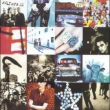36. U2
“Achtung Baby”
(Island – 1991)
By the end of the 1980s, U2 seemed to be stuck. The chiming guitar sounds and political/social lyrics had taken them from their beginnings to international stardom. What could be their next step? Rather than continue in the same style, U2 tore down their own legacy and rebuilt it in one of the greatest reinventions in rock and roll history. Achtung Baby opens with the heavy, distorted guitar riff and speaker-busting drum beat of Zoo Station, a declaration that this was a whole new band and whole new sound. From the funky jackhammer guitar of Mysterious Ways to the snarling first single The Fly to One, a song with a million different interpretations, U2 created a new persona and new experimental attitude launched them into their second decade with a bang. The band has made great records before and since then, but none of them can touch Achtung Baby. Joe Marvilli
Playlist: The Fly
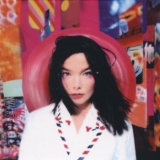35. Björk
“Post”
(One Little Indian – 1995)
Björk ‘s second solo album proper, Post, built on the adventurous spirit of her previous album (Debut) and showed a genuine understanding of classic pop, avant-garde electronics and cutting-edge dance music. It's a boldly coloured pop-up book of rumbling beats, ambient textures and big band bombast. Army Of Me is an industrial nod to her punk roots, while Hyperballad blends deep and restless bass with soothing strings and house beats. These are trumped, however, by I Miss You, which has the fizz of classic girl groups over a kitchen-sink backing that sounds like a cartoon band from The Flintstones. Beautiful, powerful, fragile and peppered with idiosyncrasies, Post is an album like no other. Gary McGinley
Playlist: I Miss You
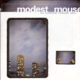34. Modest Mouse
“The Lonesome Crowded West”
(Up – 1997)
As the compact disc slips further and further into irrelevancy, it becomes easy to forget the technological advancements these shiny plastic discs brought in the first place. For without the medium and its increased space capacity, Modest Mouse as we remember them might not have been the same, as the band needed all the record space they could afford to cram the open highways and long, dusty trails of The Lonesome Crowded West onto one disc. And while even half of the album’s definitive classics, like Teeth Like God’s Shoeshine, Cowboy Dan and Trailer Trash, could easily make for a great solitary experience, it’s the little extra moments – the memorable throwaways like Shit Luck and Jesus Christ Was A Lonely Child, the lengthy, wandering back-half of Truckers Atlas – that really cement The Lonesome Crowded West’s long-held superlative: the ultimate road trip album. Peter Quinton
Playlist: Trailer Trash
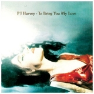33. PJ Harvey
“To Bring You My Love”
(Island – 1995)
Down By The Water must be the spookiest song ever to get primetime airplay on MTV. To Bring You My Love was PJ Harvey’s breakthrough album, but she didn’t compromise one iota to get there. Just listen to the title song, a blues from hell that will curl your toes, where Harvey sounds possessed, haunted by some unknowable sin. Jesus is invoked throughout the record, but damnation is what moves the characters of Send His Love To Me and C’mon Billy, lost in sexual obsession and feral needs. Harvey stakes out her territory with the killer riffs and dripping sexuality of Meet Ze Monsta and Long Snake Moan, only slowing down for the agony of Teclo and the death-sentence mood of The Dancer. Hard-edged and sensual, the album commands you to sit back and be seduced. Angel Aguilar
Playlist: To Bring You My Love
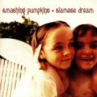32. The Smashing Pumpkins
“Siamese Dream”
(Virgin – 1993)
With the incessant line-up changes and a string of mediocre releases, I sometimes wonder if Billy Corgan is actively trying to destroy the Smashing Pumpkins’ legacy. Listening to the band’s recent output, it’s hard to grasp why the Pumpkins were such a big deal in the early to mid-nineties; one blast of Siamese Dream, however, and it’s harder still to comprehend how it could all go so spectacularly wrong for the band later in their career. A relentless fusion of muscular riffs, heavy rock rhythms and shoegaze textures, it is a tribute to the band's accomplished musicianship that Siamese Dream still succeeds in spite of the high levels of angst that permeate the record. For a teenager in the mid-nineties, of course, Corgan’s navel-gazing was heaven sent; in 2013, knowing what happened next, it can be a little distracting. Highlights are plentiful, but the utterly immense Cherub Rock remains my personal favourite, not to mention an era-defining anthem. David Coleman
Playlist: Cherub Rock
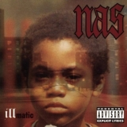31. Nas
“Illmatic”
(Columbia – 1994)
It was almost as if Nas had taken everything great from rap’s golden age and put it into a single album. Tough and wise like KRS-One, beats as good as the Bomb Squad’s, raps like Rakim’s. Taking rapping to a new plateau, his lines were a linguist’s wet dream, full of alliteration, assonance, internal rhymes and equivocal wordplay. It’s the sort of thing academics will notice in a few years and ruin. The set of all-star producers, among them DJ Premier and Q-Tip, bring a unique feel to each song, allowing Illmatic to switch from One Love’s dreamy, jazz infused sound to the tough bass and beats of One Time 4 Your Mind. All this in under forty minutes. Modern hip-hop artists, take note. James McKenna
Playlist: World Is Yours
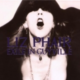30. Liz Phair
“Exile In Guyville”
(Matador – 1993)
Listening to songs like Flower and Fuck And Run, you’d think the map of the female psyche was strewn with one-night-stand motels, but you’d be missing the point. Exile In Guyville is about lousy relationships, sexual politics, and the search for true love in a dating scene populated by boy-men, swellheads and creeps. Musically, the album is a tour de force that often strays from the Stonesy vibe of songs like Mesmerizing into the realms of folky ruminations (Glory) and poppy singalongs (Never Said). Phair’s lyrics are filled with everyday details but with a frankness that switches from shocking to funny on the same line. Phair later moved onto a more pop-oriented sound, but if Exile In Guyville is a one-off, it has still earned a place in rock n’ roll history. Angel Aguilar
Playlist: Fuck And Run
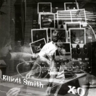29. Elliott Smith
“XO”
(DreamWorks – 1998)
There’s a lot to be said about an artist who can channel such acute physical and psychic pain into their work without painting themselves as some sort of melodramatic sad-sack, or worse, a clichéd “rock n’ roll” martyr. Such is the brilliance of XO which, despite its grandiose, high-gloss production and upbeat, melodic-pop sensibilities, is quite a downer. But it’s a downer we can all share in, not simply a dark entry made in the personal diary of its author, but moreso a sounding board for all of the anxieties, neuroses, and unchanging, existential frustrations that plague every living being on the planet. Andrew Ciraulo
Playlist: Bottle Up And Explode
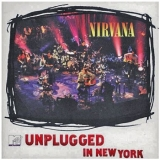28. Nirvana
“MTV Unplugged In New York”
(DGC – 1994)
It’s easy to build a mythology around MTV Unplugged In New York, and it can probably be reasonably supported, but it’s also unnecessary. One listen to the anguished screams on the cover of Leadbelly’s Where Did You Sleep Last Night? will show you what Cobain was capable of. There’s a fine array of covers throughout the album that also includes Bowie and three Meat Puppets songs, and it’s hard to tell if it’s more impressive that they are all arguably better than the originals or that they fit in so seamlessly with Cobain’s originals which, arguably, include the definitive cuts of About A Girl, Come As You Are, and even All Apologies. This album makes it clear; Kurt Cobain was more than just a punk who understood pop (or vice-versa). He was one of the ‘90s truly great songwriters. Forrest Cardamenis
Playlist: Where Did You Sleep Last Night?
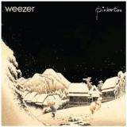27. Weezer
“Pinkerton”
(DGC – 1996)
This is an object lesson in why the sound of a record needs to meet the demands of audience ears in order to become a hit. The quality of the songs were up to the standard of their monster first record, so why did this flop? It wasn’t that the songs were too personal or raw (though they were those things), it was that Rivers didn’t gussy the whole thing up to make it radio friendly, bringing the vocal up in the mix, editing out the flaws, and compressing the whole thing to pare down the dynamic range. Because he left the raw edges in, the wise aesthetic decision given the subject matter, he had to live with commercial failure, which blinded him to artistic success. Unfortunately, he learned the lesson too well, and never made the same “mistake” again. Alan Shulman
Playlist: Pink Triangle
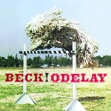26. Beck
“Odelay”
(DGC / Bong Load Custom – 1996)
If Odelay were recorded today, it would take years to put out, due to the massive amount of sampling strewn throughout the record. The main riff of the powerful opener Devil’s Haircut was originally from Them’s I Can Only Give You Everything. The sparkling synth of Jack-Ass is taken from the same band’s cover of Bob Dylan’s It’s All Over Now Baby Blue. As for Where It’s At, I wouldn’t even know where to start. But it is those samples, combined with Beck’s offbeat ways of using them that makes this album his masterpiece. It takes someone truly on top of their game to not only reuse these songs in a new, unique way, but to make them strong enough that they’ve replaced the originals in public consciousness. Along with Paul’s Boutique by Beastie Boys, Odelay took sampling to a legitimate art form. Joe Marvilli
Playlist: Where It’s At
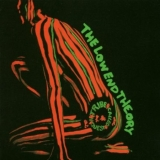25. A Tribe Called Quest
“The Low End Theory”
(Jive / RCA – 1991)
Hip-hop reached its highest conscience point with the Native Tongues collective, and A Tribe Called Quest’s The Low End Theory, with their laid-back atmospheres, smooth-jazz samples and dynamic rhymes, probably stands as the foremost group of the moment. Released in 1991 and absolutely influenced by the fresh gangsta aesthetic from both American coasts, The Low End Theory managed to channel all the community’s anger into a positive blend of constructive messages and optimistic rhythms –most provided by double bassist Ron Carter. A Tribe Called Quest’s sophomore record is a masterful experience. Composed with heart from beginning to end, it’s definitely one of hip-hop’s golden moments. Carlos Dávalos
Playlist: Verses From The Abstract
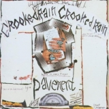24. Pavement
“Crooked Rain, Crooked Rain”
(Matador / Big Cat – 1994)
Pavement were the quintessential 90s indie-rock band. All the slacker demeanour so wonderfully captured on their ultra lo-fi debut, Slanted & Enchanted, might well have been lost on their first trip to a studio, but in expanding, they only reinforced their earworm melodies, brought out all the resonances of their strange turns of phrase, and most impressively, all the moments where they sounded like they would simply collapse came out sounding glorious – the drawn-out closer Fillmore Jive is the slacker aesthetic at its most life-affirming. Range Life is like a too-perfect relic of its time, Smashing Pumpkins diss and all, complete with a video of them lazily walking backwards through festival crowds. But then, people will still be quoting Gold Soundz fifty years from now, because everything Pavement did on Crooked Rain, Crooked Rain sounded like a casually-delivered universal truth. Stephen Wragg
Playlist: Gold Soundz
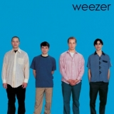23. Weezer
“Weezer”
(DGC – 1994)
Weezer was destined to outlast the grunge explosion, if only because it scoffed at the notion that alternative music had to coexist with a glamorous façade. It came from a place that was sincere, one where it was okay to worship both the larger-than-life theatrics of KISS and the shimmering, clean-cut melodies of The Beach Boys. They found a way to seamlessly quilt both and discovered that it gave the sweet sounds of power pop a bit of a harder edge, painting the anguish of young love and broken family ties amidst that of a suburban landscape without the slightest artifice. The effort eventually paid dividends, and Weezer surprisingly managed to inch their way into the mainstream consciousness. To the liking (and loathing) of many, Weezer became the unlikeliest arena rockers, a self-knowingly uncool foursome that transcended their image by conveying their message with an all-inclusive embrace. Juan Edgardo Rodriguez
Playlist: Say It Ain't So
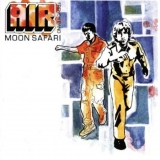22. Air
“Moon Safari”
(Virgin – 1998)
Whilst the chillout movement of the late 1990s and early 2000s may not have been the most important genre of the time, it spawned several classic albums that are still enjoyed and revered to this day. One such album is Air’s Moon Safari. Whenever any mention is made of Air, it’s almost invariably followed by a reference to Moon Safari, for it’s an album that, despite some modest efforts, Air have struggled to live up to ever since its release. It’s an encyclopaedia of chillout, bringing together influences from styles including electronica, jazz and early 20th century French classical music to create a complex and engaging soundscape. Craig Stevens
Playlist: La Femme D’Argent
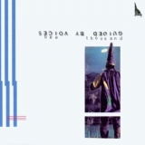21. Guided By Voices
“Bee Thousand”
(Scat – 1994)
Thereʼs magic when someone can reach into the great collective unconscious that is contemporary music and pull out some real pop gold... even if itʼs only 45 seconds long. Yet thatʼs what Bee Thousand is filled with, snippets of fleeting, indie rock thoughts woven into a lopsided tapestry of charming forget-me-nots. Itʼs every far-fetched daydream you’ve ever had about rock stardom, but recreating it on a much smaller scale, imbuing it with a sense of sincerity. While Bob Pollard and the gang may have been just trying to rock out in each other’s basements, itʼs precisely that spirit – of making music for the pure reward and joy of making music – that seeped out of their cramped quarters in Ohio and firmly cemented itself into the minds of independent music fans all over the world. Andrew Ciraulo
Playlist: Echoes Myron